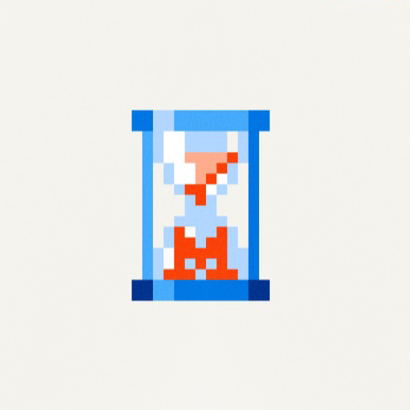

Team ASD· Business Turku challenge
Adding condition awareness
to existing machines
Find emerging faults in the sensor data you already have. No new equipment.
!
Approach

Timestral
pre-trained time-series transformer
LoRA
Benchmark
Challenge score
BaselineOurs
Faults detected
BaselineOurs
Correct fault type
BaselineOurs
7 validation pumps (2 official + 5 generated) · organizer scorer · baseline: organizer B1
Use case
Fault alert
from Timestral
Cost
0
parameters
Runs on-site.
Data stays there.
0
weights trained (of 26M)
Not pump-specific
7 public pumps
+ 250 simulated pump-weeks
Any annotated time series
Reliability and safety
Alert threshold: set by the customer
Fewer missed
alertsFewer false
alarms
Each alert shows its cause